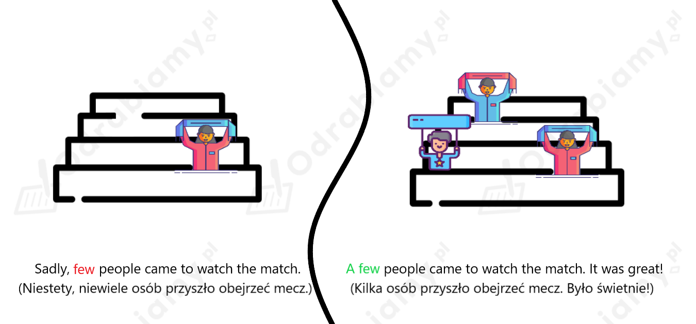
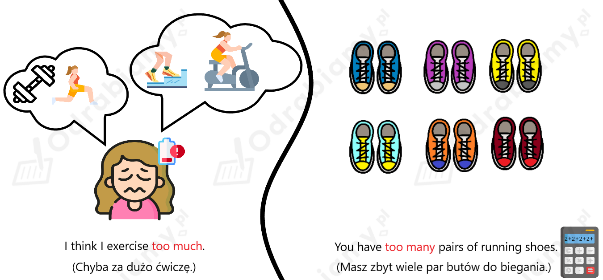
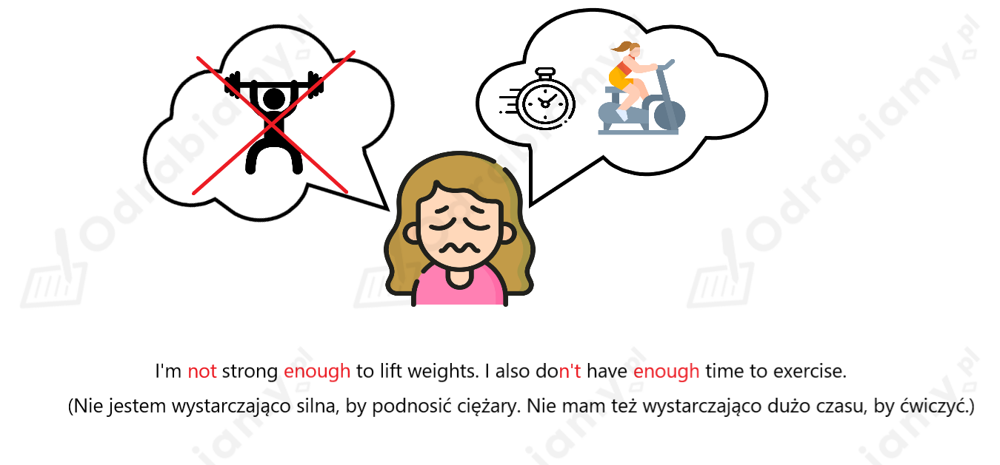

Poniżej przedstawiona jest przykładowa odpowiedź do tego zadania. Każdy uczeń może rozwiązać je w inny sposób. Poniższe rozwiązanie traktuj jako wzór, na podstawie którego stworzysz własną odpowiedź.
Yes, I've been on a few sports teams. I mostly play basketball, handball and football because they're my favourite sports.
I'd be interested in joining a swimming team. I've never tried competitive swimming.
Tłumaczenie:
Tak, byłem/am w kilku drużynach sportowych. Gram głównie w koszykówkę, piłkę ręczną i piłkę nożną, ponieważ są to moje ulubione sporty.
Był(a)bym zainteresowany/a dołączeniem do drużyny pływackiej. Nigdy nie próbowałem/am pływania wyczynowego.
Athletic club (klub lekkoatletyki):
- gaining stamina and motivation (wyrobienie wytrzymałości i motywacji)
- losing weight (zrzucenie wagi)
- fun (zabawa)
Fragment w tekście: "Do you have no stamina and not enough motivation to get moving? If you'd like to lose a couple of kilos and have lots of fun (...)." - Brakuje ci wytrwałości i motywacji, aby zacząć się ruszać? Jeśli chcesz zrzucić kilka kilogramów i dobrze się bawić (...).
Unicycle hockey/water polo (hokej na monocyklu/piłka wodna):
- being original (bycie oryginalnym)
- no special skills required (nie potrzebne żadne wyjątkowe zdolności)
- health benefits (korzyści zdrowotne)
- fun (zabawa)
Fragment w tekście: "Be original! (...) offer a great deal of fun (...). Neither of these sports require special skills, and they have the same health benefits that most physical activities do." - Bądź oryginalny! (...) oferują świetną zabawę (...). Żaden z tych sportów nie wymaga specjalnych umiejętności i ma takie same korzyści zdrowotne, jak większość aktywności fizycznych.
1. neither
Uzasadnienie: wyrażenia neither of (żaden z) używamy z rzeczownikami policzalnymi, kiedy chcemy powiedzieć, że nie ma żadnej z dwóch wymienionych osób lub rzeczy.
2. none
3. no
Uzasadnienie: wyrażeń none of i no (żadne) możemy użyć zarówno z rzeczownikami policzalnymi, jak i niepoliczalnymi, kiedy chcemy powiedzieć, że nie ma niczego z grupy liczącej więcej niż dwie osoby lub rzeczy.
4. not many
Uzasadnienie: wyrażenia not many (niewiele) używamy z rzeczownikami policzalnymi, kiedy chcemy opisać niewielką ilość osób lub rzeczy.
5. a couple of
Uzasadnienie: wyrażenia a couple of (kilka) używamy z rzeczownikami policzalnymi, kiedy chcemy opisać średnią ilość osób lub rzeczy.
6. a great deal of
Uzasadnienie: wyrażenia a great deal (całkiem sporo) używamy z rzeczownikami niepoliczalnymi, kiedy chcemy opisać większą ilość osób lub rzeczy.
1. few
Uzasadnienie: przed rzeczownikiem w liczbie mnogiej można użyć określenia few (niewielu).
2. plenty of
Uzasadnienie: przed rzeczownikiem niepoliczalnym można użyć określenia plenty of (mnóstwo).
3. neither
Uzasadnienie: do wykluczenia dwóch rzeczy możemy użyć określenia neither (żadne).
4. all
Uzasadnienie: przed rzeczownikiem w liczbie mnogiej można użyć tylko określenia all. Określeń every i each można użyć samodzielnie przed rzeczownikami w liczbie pojedynczej.
5. not much
Uzasadnienie: przed rzeczownikiem niepoliczalnym można użyć określenia not much (niewiele).
6. no
Uzasadnienie: do wykluczenia wszystkich możliwych rzeczy możemy użyć określenia no (żadne). Określenie none nie może wystąpić samodzielnie.
1. effort, energy, hours, parents, siblings, strength, students, time, trophies
Uzasadnienie: określenia no można użyć zarówno z rzeczownikami policzalnymi, jak i niepoliczalnymi.
2. hours, parents, siblings, students, trophies
Uzasadnienie: określenia several można użyć z rzeczownikami policzalnymi.
3. effort, energy, hours, parents, siblings, strength, students, time, trophies
Uzasadnienie: określenia none of the można użyć zarówno z rzeczownikami policzalnymi, jak i niepoliczalnymi.
4. parents, siblings, students, trophies
Uzasadnienie: określenia neither of the można użyć z rzeczownikami policzalnymi, które mogą wystąpić parami (dlatego "godziny" odpadają).
5. effort, energy, hours, parents, siblings, strength, students, time, trophies
Uzasadnienie: określenia all of the można użyć zarówno z rzeczownikami policzalnymi, jak i niepoliczalnymi.
6. effort, energy, strength, time
Uzasadnienie: określenia a great deal of można użyć z rzeczownikami niepoliczalnymi.
7. effort, energy, strength, time
Uzasadnienie: określenia a great deal of można użyć z rzeczownikami niepoliczalnymi.
Poniżej przedstawiona jest przykładowa odpowiedź do tego zadania. Każdy uczeń może rozwiązać je w inny sposób. Poniższe rozwiązanie traktuj jako wzór, na podstawie którego stworzysz własną odpowiedź.
I have no time to go jogging in the mornings. (Nie mam czasu na poranny jogging.)
I think getting fit requires a great deal of time and effort. (Myślę, że zdobycie formy wymaga wiele czasu i wysiłku.)
I'd say all of the hours I spent playing my favourite sport were worth it. (Powiedział(a)bym, że wszystkie godziny spędzone na uprawianiu mojego ulubionego sportu były tego warte.)
None of the winter sports I know sound appealing to me. (Żaden ze znanych mi sportów zimowych nie wydaje mi się atrakcyjny.)
Several students from my school like fencing, which is my favourite sport. (Kilku uczniów z mojej szkoły lubi szermierkę, która jest moją ulubioną dyscypliną.)
Indywidualne
Poniżej przedstawiona jest przykładowa odpowiedź do tego zadania. Każdy uczeń może rozwiązać je w inny sposób. Poniższe rozwiązanie traktuj jako wzór, na podstawie którego stworzysz własną odpowiedź.
Rozwiązanie na obrazku:

Grafiki wykorzystane do stworzenia ilustracji pochodzą ze strony: flaticon.com.
Uzasadnienie: few i a few używamy tylko z rzeczownikami policzalnymi. Few ma znaczenie negatywne - używamy tego określnika, aby powiedzieć, że jakaś liczba jest niewystarczająca. A few ma znaczenie pozytywne.

Grafiki wykorzystane do stworzenia ilustracji pochodzą ze strony: flaticon.com.
Uzasadnienie: too much używamy z rzeczownikami niepoliczalnymi oraz jako przysłówka (razem z czasownikami, np. tu: exercise). Too many używamy tylko z rzeczownikami policzalnymi.

Grafiki wykorzystane do stworzenia ilustracji pochodzą ze strony: flaticon.com.
Uzasadnienie: not enough może być stosowane zarówno z rzeczownikami policzalnymi, jak i niepoliczalnymi (np. tu: time). Może również służyć jako przysłówek do stopniowania zarówno przymiotników (np. tu: strong), jak i czasowników.
Poniżej przedstawiona jest przykładowa odpowiedź do tego zadania. Każdy uczeń może rozwiązać je w inny sposób. Poniższe rozwiązanie traktuj jako wzór, na podstawie którego stworzysz własną odpowiedź.
Rules for water polo: (zasady gry w piłkę wodną)
• The playing area for water polo is 30m x 20m and has a minimum depth of 2m.
(Boisko do gry w piłkę wodną ma wymiary 30 m x 20 m i minimalną głębokość 2 m.)
• Each team has 13 players, but only 7 players are in the game at a time, with 6 field players and 1 goalkeeper.
(Każda drużyna składa się z 13 zawodników, ale tylko 7 z nich bierze udział w grze, w tym 6 zawodników z pola i 1 bramkarz.)
• Players can only use one hand to hold the ball, except for the goalie who can use two hands near their own goal.
(Gracze mogą używać tylko jednej ręki do trzymania piłki, z wyjątkiem bramkarza, który może używać dwóch rąk w pobliżu własnej bramki.)
• Water polo matches are divided into four quarters, each lasting eight minutes, with a two-minute break between quarters.
(Mecze piłki wodnej podzielone są na cztery kwarty, z których każda trwa osiem minut, z dwuminutową przerwą pomiędzy kwartami.)
• Players move the ball by swimming with it or passing it to their teammates.
(Gracze poruszają się z piłką, pływając z nią lub podając do kolegów z drużyny.)
• Players mustn't touch the pool bottom during the match.
(Gracze nie mogą dotykać dna basenu podczas meczu.)
• Teams have 30 seconds to keep possession of the ball before shooting at the goal.
(Drużyny mają 30 sekund na utrzymanie się w posiadaniu piłki przed oddaniem strzału na bramkę.)
• A goal is worth one point and is scored when the ball goes completely between the goalposts and under the crossbar.
(Bramka jest warta jeden punkt i zostaje zdobyta, gdy piłka przeleci całkowicie między słupkami bramki i pod poprzeczką.)
• Fouls in water polo are divided into ordinary fouls and major fouls.
(Faule w piłce wodnej dzielą się na zwykłe i ciężkie.)
• Players are allowed only three major fouls before being excluded from the game.
(Gracze mogą popełnić tylko trzy ciężkie faule, zanim zostaną wykluczeni z gry.)
• If the game ends in a tie, a shootout is used to determine the winner.
(Jeśli mecz zakończy się remisem, zwycięzca zostanie wyłoniony w rzutach karnych.)
Leaflet:
Dive into the exciting world of water polo! Join us and experience this incredible team sport.
Why choose water polo?
It is a fantastic way to stay fit and healthy. You'll be swimming, passing, and shooting while having a great time.
You can improve your teamwork skills as you work together to win. Cooperation and communication are key in water polo.
It will help you get better at swimming and thinking strategically. Water polo challenges both your physical and mental abilities.
It's very fast-paced and thrilling, so you will never get bored.
Water polo welcomes players of all ages and skill levels. No matter who you are and what you can do, there's a place for you in the water polo community.
How to get started:
Tłumaczenie:
Zanurz się w ekscytującym świecie piłki wodnej! Dołącz do nas i poznaj ten niesamowity sport drużynowy.
Dlaczego warto wybrać piłkę wodną?
Jak zacząć: